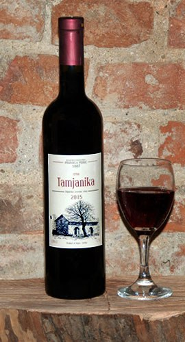

Crna tamjanika
Drevna, specifična muskatna sorta, retka u svetu. Postoje zapisi da se na ovim prostorima gajila još u srednjem veku. Izuzetno poluslatko vino neponovljivog ukusa, koje u našim krajevima ima gotovo mitski status.
Preporuka
Pije se samo, rashlađeno, kao aperitiv. Odlično se slaže sa slatkišima kao što su štrudle i pite.